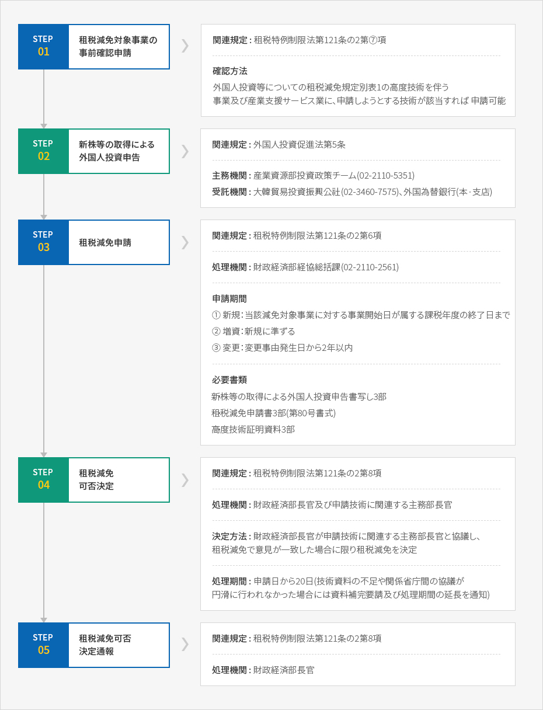

租税支援
- Home
- 投資ガイド
- 投資インセンティブ
- 租税支援
外国人投資企業に対する租税支援
外国人投資に対しては、租税特例制限法が定めるところにより事業所得と配当所得、技術導入対価、勤労所得等については法人税と所得税を減免し、取得·保有している財産は取得税·登録税·財産税を減免しています。
法人税の減免
- 外国人投資企業に対する法人税の減免は、租税特例制限法上、減免対象事業において生じた所得を対象とします。但し、減免対象事業に投資している外国法人又は外国企業の議決権のある株式等を大韓民国国民（法人）が直接又は間接的に10%以上所有する場合には、その株式の所有比率に相当する投資部分は租税減免対象事業として見なされません。このため、海外進出の国内企業における国内再投資分(round trip)に対しては租税減免から除外します。
- 減免起算日は最初に所得が発生した課税年度又は事業開始日から5年となる日が属する課税年度のうち、早い課税年度から適用します。
事業開始日の基準
- 製造業については製造場別に財貨の製造を開始する日
- 鉱業については事業場別に鉱物の採取·採鉱を開始する日
- その他の事業においては財貨又は用役の供給が開始される日
- 増資の場合には増資登記日を事業開始日と見なして同規定を適用し、準備金、再評価積立金等の資本転入により外国人が取得する株式等に対してはその発生根拠となる株式等の減免の例にしたがって減免期限と減免比率が決定されます。有償減資後5年以内に増資して租税減免申請をする場合にはその減資前を基準に、純増する部分に対する外国人投資比率に限って減免を決定します。但し、純国内企業が増資を通じて外国人より投資を受ける事で外国人投資企業に該当する場合には上の「増資」に該当せず、「新規」外国人投資に該当します。
- 合併の場合、外国人投資企業が減免期間中に国内法人(減免期間中の外国人投資企業は除く)と合併してその合併法人の外国人投資比率が減少した場合には合併前の外国人投資企業の外国人投資比率を適用します。
- 新規減免対象ではない再評価積立葦金·準備金の資本転入時に均等配分した場合、増資した事業年度とその次の事業年度の減免比率に変動はありません。
減免税額の計算方法
| 区分 | 計算方法 |
|---|---|
| 減免税額 | 減免税額=(算出税額 X 減免対象事業課税課標/総課税標準) X 減免比率 |
| 減免比率 |
|
地方税(取得税·登録税·財産税)の減免
- 外国人投資企業が減免対象事業を営むために取得·保有する財産に対しては取得税·登録税·財産税について100%又は50%の税額を減免、又は課税標準から控除します。
- 事業開始日以降に取得した財産に対しては 取得税·登録税·財産税の全てについて、事業開始日から3-5年間、その財産に対する算出税額に外国人投資比率を掛けた金額(減免対象税額)の100%、以降2年間は50%を減免します。 但し、課税対象財産を事業開始日以降に取得しても、それが租税減免決定前である場合には、すでに納入済みの取得税-登録税の還付は出来ません。
- 一方、事業開始日以前に取得した財産は取得税·登録税の場合は、租税減免決定を受けた日以降に取得する財産に対する減免対象税額の100%全額を減免します。財産税は該当財産を取得した日から3-5年の間は減免対象税額100%、以降2年間は控除対象金額の50%を減免します。
- その他、条例により地方税減免期間を15年の範囲で延長したり、減免又は控除比率を高める事が出来ます。
関税等の免除
- 法人税又は所得税が減免される事業に直接使用される以下の資本財であって、新たに発行する株式等の取得方式による外国人投資申告により導入される場合、租税特例制限法により関税等を免除します。
- 外国人投資企業が外国投資家から出資を受けた対外支給手段又は内国支給手段として導入する資本財
- 外国人投資家が出資目的物として導入する資本財
- 関税等の免除は外国人投資申告を行った日から3年以内に関税法による輸入申告が完了する資本財に限り適用されます。但し、工場設立承認の遅延、その他やむを得ない事由により同期間内に輸入申告を完了する事が出来ない場合には、追加として3年以内の範囲内で財政経済部長官の承認を得て免除適用を受ける事が出来ます。
- この場合、国内産業の国際競争力の強化に緊要な産業支援サービス業及び高度な技術を伴う事業、外国人投資促進法により個別型の外国人投資地域に入居する外国人投資企業が営む事業に対しては、関税、個別消費税、付加価値税の全を免除し、団地型の外国人投資地域に入居する外国人投資企業、自由貿易地域に入居する特定企業、経済自由区域に入居する外国人投資企業、経済自由区域開発事業施行者に該当する外国人投資企業、済州投資振興地区の開発事業施行者に該当する外国人投資企業等が営む事業に対しては関税を免除します。
申請機関
通関地の税関
提出書類
- 関税免除申請書
- 資本財導入物品明細確認書写し
- 現物出資又は現金で導入される資本財である事を証明する書類
- 法人税等の減免対象事業である事を証明する書類(租税減免決定書)
- Invoice、B/L又はAWB、価格申告書、Packing List、原産地証明書等
※ 現物出資に関する特例 : 現物出資完了確認
外国人投資家が出資目的物として導入する資本財(現物出資)に対し、同資本財の通関後Invest KOREA(KOTRA)に派遣された関税庁派遣官に提出書類(現物出資完了確認申請書2部、輸入申告済み証)を提出して現物出資完了確認を受けなければなりません。これにより商法の規定に関わらず、関税庁長が現物出資の履行とその目的物の種類·数量·価格等を確認した「現物出資完了確認書」を非訟事件手続法規定による検査人の調査報告書と同様に扱います。(商法規定の適用除外)
これにより外国投資家は出資目的物による資本財の導入が完了し次第、現物出資完了確認書を受け管轄法院に資本登載を行うと共に、外国為替銀行の長又はKOTRA社長に対して外国人投資企業の登録を行い、関税庁長は現物出資完了を確認した場合、これを韓国銀行総裁に遅滞なく通報しなければなりません。
これにより外国投資家は出資目的物による資本財の導入が完了し次第、現物出資完了確認書を受け管轄法院に資本登載を行うと共に、外国為替銀行の長又はKOTRA社長に対して外国人投資企業の登録を行い、関税庁長は現物出資完了を確認した場合、これを韓国銀行総裁に遅滞なく通報しなければなりません。
配当金に対する租税支援
- 租税減免対象事業を営む外国人投資法人から外国人投資家が支給を受ける配当金に対しては、減免期間内に発生した配当所得を基準に減免対象事業の所得金額比率分を減免します。
- 新規投資及び現金·現物·配当金による増資による配当金の減免起算日は法人税の減免起算日と同一であり、法人税が100%減免される期間中は配当所得税も100%、法人税が50%減免される期間中は配当所得税も50%が減免されます。一方、利益準備金·再評価積立金·準備金の資本転入によって増資を受けた資本金に該当する配当金についてはその発生根拠となる元本株式の減免期間及び減免率を適用します。すなわち、新規で5年間100%、2年間は50%減免されるものではありません。
- 外国人投資家が外国人投資企業の内国人又は国内法人の持分を引受けた場合には、既存の株式取得に該当するため租税減免対象には当たりませんが、外国人又は外国法人の持ち分を他の外国人又は外国法人が引受けた場合には当初の減免期間及び減免率がそのまま適用されます。
租税減免申請手続き
租税減免の申請
1) 租税減免対象事業の事前確認
- 外国人投資家·外国人投資企業は外国人投資促進法による外国人投資申告前に租税減免対象の可否確認を財政経済部長官に申請する事が出来、政経済部長官は20日以内に減免対象の可否を決定し通知しなければなりません。
- 事前確認申請は高度技術の可否を単に事前確認するのみであり租税減免決定効力は認められないため、外国人投資申告後に別途租税減免申請が必要です。
2) 租税減免の申請
- 外国人投資企業の租税減免は財政経済部長官に申請しなければなりません。但し、財政経済部長官は自由貿易地域における外国人投資に対する租税減免の申請及び租税減免変更申請の受付、減免 ·減免内容変更·減免対象の可否の決定·確認·通知に関する権限を管理権者に委託しています。
- 申請期限は、新規法人については外国人投資企業の事業開始日が属する課税年度の終了日までであり、増資法人については租税特例制限法の新規投資租税減免規定を準用し(第121条の2及び121条の３)定めます。 但し、外国人投資企業が外国人投資申告後、最初の租税減免通知日から3年となる日以前に租税減免決定時に確認された外国人投資申告金額の範囲内で増資をする場合には、減免申請をしない場合でもその増資分に対して減免決定を受けたものと見なします。 また、減免決定を受けた事業内容を変更する場合、その変更された事業に対する減免を受けようとする際は、当該変更事由発生日から2年となる日まで(この場合には残余期間に対して減免適用)に行わなければなりません。租税減免申請期限が経過した後の減免申請により減免決定を受けた場合にはその減免申請日が属する課税年度と、その後の残余減免期間に限り減免を行いますが、すでに納めた税額は還付しません。
租税減免内容の変更申請
租税減免内容に対する変更申請は、租税減免決定を受けた事業内容(減免対象事業)の変更部分に対する申請をいいます。もし外国人投資金額等、外国人投資申告内容に変更がある場合には、別途の租税減免変更決定なしに外国人投資促進法による外国人投資内容変更申告又は外国人投資企業登録変更申請の内容にしたがって当初の租税減免決定効力が発生します。一方、単に法人名変更及び所在地変更は租税減免内容変更申請対象にならないため、当該税務署及び地方自治体に申告する必要があります。
提出書類
- 当該技術に関する説明書：その技術により生産又は供給される製品やサービスについてのカタログ等の参考資料
- 当該技術により生産又は供給される製品やサービスの活用範囲を記載した書類
- 生産方式及び工程表(製造技術に限る)
- 全工程について作成するが、高度技術を要する工程を区分して表示する事
- 工程別の生産行為が国内で行われるかを表示する事
- 経済的効果又は技術的性能を証憑する資料
- 当該技術により生産又は供給される製品やサービスと同種又は類似する製品やサービスと比較した性能、品質又は費用節減等に関する事項
- 高度技術である事を証憑出来る次の資料
- 当該技術により生産又は供給される製品やサービスに対し、外国政府、その他の公認機関が発行した認証書、試験合格書、評価書等
- 当該技術(又はサービス)に対する特許権等の産業財産権に関する資料
- 当該技術(又はサービス)の開発に関連する資料(研究開発機関、開発参加者、開発費用又は所要期間等)
- 当該技術と同種の技術(又はサービス)を活用するために第三国に投資した実績と、これを第三国に供与した実績
- その他高度技術性を証憑する書類
- 外国人投資申告済証写し
- 租税減免決定内容公文書写し
3) 租税減免の決定及び通報
- 財政経済部長官は租税減免申請又は租税減免内容の変更申請があった場合には、その申請が租税減免基準を満たすかどうかを検討して20日以内に減免可否又は減免内容の変更可否を決定し、その結果を申請人に通知しなければなりません。但し、減免可否又は減免内容の変更可否を決定する場合、やむを得ず長期間が必要となると認められる際には、20日の範囲内でその処理期間を延長する事が出来ます。この場合、その事由及び処理期間を申請人に通知しなければなりません。
- 租税減免又は租税減免内容の変更を決定した場合には、財政経済部長官はその事実を国税庁長や関税庁長及びその工場施設を管轄する地方自治体の長に通知しなければなりません。
- 産業支援サービス業及び高度な技術を伴う事業に対する減免申請に対し、非減免対象事業に決定しようとする場合には、該当申請日から20日以内に決定予告の通知を行わなければなりません。 決定予告通知を受けた者はその通知を受けた日から20日以内に、通知内容に対する適正性可否の審査を疏明資料を添付し、書面にて財政経済部長官に要請する事が出来、これに対して財政経済部長官は要請を受けた日から20日以内に減免可否を決定し、その結果を申請人に通知しなければなりません。
外国人投資企業の租税減免申請手続き


- 조세감면 대상사업 사전확인 신청 - 관련규정 : 조세특례제한법 제121조의2 제7항 - 확인방법 : 외국인투자 등에 대한 조세감면 규정 별표1의 고도기술수반사업 및 산업지원서비스업 목록에 신청하고자 하는 기술이 해당되어야만 신청가능
- 신주 등의 취득에 의한 외국인투자신고 - 관련규정 : 외국인투자촉진법 제5조 - 주무기관 : 지식경제부 투자정책팀(02-2110-5351) - 수닥기관 : 대한무역투자진흥공사(02-3460-7575), 외국환은행(본·지점)
- 조세감면신청
- 관련규정 : 조세특례제한법 제121조의2제6항
- 처리기관 : 기획재정부 경협총괄과(02-2110-2561)
- 신청기간
- ① 신규 : 당해 감면대상사업에 대한 사업개시일이 속하는 과세연도의 종료일 까지
- ② 증자 : 신규에 준함
- ③ 변경 : 변경사유일로부터 2년 이내
- 신주 등의 취득에 의한 외국인투자신고서 사본 3부
- 조세감면신청서 3부(제80호 서식)
- 고도기술증명자료 3부
- 조세감면 여부 결정 - 관련규정 : 조세특례제한법 제121조의2제8항 - 처리기관 : 기획재정부장관 및 신청기술 관련 주무부 장관 - 결정방법 : 기획재정부장관이 신청기술 관련 주무부장관과 협의하여 결정, 조세감면 결정의견이 일치할 경우에 한하여 조세감면을 결정함 - 처리기간 : 신청일로부터 20일(기술자료가 부족하거나 관계부처간 협의가 지연되는 경우에는 자료보완 요청 및 처리기간 연장 통보)
- 조세감면 여부 결정통보 - 관련규정 : 조세특례제한법 제121조의2제8항 - 처리기관 : 기획재정부장관

減免税額の追徴
租税特例制限法で定める租税減免制度は一定期間に渡り減免要件を満たす場合のみ許容され、このような減免要件を満たさない場合には次の表の通り、減免された税額を追徴する事となります。
減免税額追徴内容
| 追徴事由 | 対象租税 | 追徴範囲 |
|---|---|---|
| 登録抹消及び廃業した場合 | 法人税、所得税、取得税、登録税、財産税、総合土地税、関税、特別消費税、付加価値税 | 登録抹消·廃業日から遡及して5年 (関税:3年)以内に減免された税額 |
| 減免基準に当てはまらない場合 | 法人税、所得税、関税等 | 減免基準に当てはまらなくなった日から遡及して5年以内に減免された税額 |
| 申告内容を履行しなかったり、是正命令を履行しなかった場合 | 法人税、所得税、関税等 | 是正命令期間満了日から遡及して5年以内に減免された税額 |
| 外国人投資家が所有する株式·持分を 大韓民国国民(法人)に譲渡する場合 |
法人税、所得税 | 課税年度の初日から3年以内に譲渡した場合 : 減免された税額 X (1 - 経過月数/36) X 株式譲渡比率 |
| 関税、特別消費税、付加価値税 | 免除日から3年以内に譲渡した場合 : 減免された税額 X (1 - 経過月数/36) X 株式譲渡比率 | |
| 取得税、登録税、財産税、総合土地税 | 譲渡日から遡及して5年以内に減免された税額X株式譲渡比率 | |
| 出資目的物が申告された目的以外に 使用·処分された場合 |
関税、特別付加価値税、付加価値税 | 輸入申告受理日から5年(関税:3年)以内に申告目的以外に使用、もしくは処分した資本財について減免された税額 |
| 外国人投資者の株式又は持分比率が 減免当時の比率に満たない場合 |
取得税、登録税、財産税、総合土地税 | 減免当時の比率に満たなくなった日から遡及して5年以内に減免された税額に、満たない比率を掛けた金額 |
但し、下記の事由に対しては追徴を免除する場合があります。
- 外国人投資企業が合併により会社が解散され、外国人投資企業登録が抹消された場合
- 関税等の免除を受けて導入され、使用中の資本財が天災・地変、その他の不可抗力的な事由や、減価償却、技術の進歩、その他経済環境変化等によりその本来の目的に使用する事が出来なくなったため、財政経済部長官の承認を得て本来の目的以外の目的に使用したり処分した場合
- 証券取引法に基づきその外国人投資企業を公開するに当たり、株式等を大韓民国国民又は大韓民国法人に譲渡する場合
- 産業支援サービス業又は高度な技術を伴う事業に投資した外国人投資家が、その所有株式等を大韓民国国民又は大韓民国法人に譲渡した場合であって、当該企業がその産業支援サービス業及び高度技術を伴う事業から生産·提供される製品又はサービスを国内で独自に生産するのに支障がないと財政経済部長官が確認した場合
- 外国人投資家が所有する株式等を他の法令や政府の政策により大韓民国国民又は大韓民国法人に譲渡した場合であって、それを財政経済部長官が確認した場合
その他の租税支援
技術導入対価に対する租税免除
国内産業の国際競争力強化に必要な高度技術を契約によって導入した場合、その技術を提供する外国人が受けるべき技術の導入対価についての法人税·所得税が最初にその対価が支給された日から5年間の間免除されます。これは外国人投資企業のみに適用されるものではなく、純粋な国内(韓国)企業にも同一適用されます。
この場合、租税免除を受ける技術の範囲は、財政経済部長官が外国人投資審議委員会の審議を経て告示する技術(高度技術製品及びその技術)であって、以下の各号の基準に当てはまる技術を言います。
- 国民経済に対する経済的又は技術的波及効果が大きく、産業構造の高度化と産業競争力強化で必須的な技術
- 初めて国内に導入された日（技術導入契約申告日）から3年が経過していない技術や3年が経過した技術であって、すでに導入された技術に比べ経済的な効果又は技術的な性能が優れた技術
- 当該技術が使われる工程が主に国内で行われる技術
技術導入対価に対する租税免除を受けるためには、技術導入契約締結日から1年又は技術導入対価の最初の支払日のうち、早い日までに主務部長官に免除申請を行わなければなりません。申請期限経過後に免除申請により免除確認を受けた場合には、その免除を申請した課税年度と以降の残存免除期間に限って租税を免除し、すでに納入を完了した税金の還付は行いません。
外国人投資企業と技術導入対価に関する租税減免の比較
| 区 分 | 外国人投資に対する租税減免 | 高度技術対価に関する租税免除 |
|---|---|---|
| 受け手 | 外国人投資企業、外国人投資家 | 高度技術提供者 |
| 減免所得 | 外国人投資企業の法人税·所得税、投資家に対する配当所得税 | 高度技術対価(使用料、ロイヤリティー 等) |
| 減免期間 | 5年間100%、以降2年間50% | 5年間100% |
| 減免起算日 | 所得発生課税年度(5年以内) | 最初の対価支払日 |
| 関連法条文 | 租税特例制限法第121条の25 | 外国人投資促進法第25条、第26条/租税特例制限法第121条の6 |
| 技術基準 | 国際競争力、高度技術、3年未経過等 | |
| 申請期限 | 財政経済部長官に対し事業開始日が属する課税年度終了日までに申請（事前確認申請制度あり） | 主務部長官に対し技術導入申告及び契約締結日から1年又は最初の対価支支払日のうち、早い日までに租税減免申請 |
| 処理期間 | 申請日から20日以内 | 申請日から20日以内 |
| 申請書式 | 租税減免申請書(別紙第80号書式) | 技術導入対価に対する法人税等の免除申請書(別紙 第84号書式) |
| 減免対象 | 外国人投資等に対する租税減免規定別表1 | |
外国人技術者に対する租税支援
- 特定の外国人技術者が国内で内国人に勤労を提供して支給される勤労所得であって、その外国人技術者が国内において最初に勤労を提供した日から5年となる日が属する月までに発生した勤労所得について所得税が免除されます。但し、同事項は最初に勤労を提供した日が2009年12月31日以前の場合に限り制限的に適用されます。
- 外国人投資促進法で定められている技術導入契約によって勤労を提供する外国人技術者が国内で内国人に勤労を提供して支給される勤労所得についても所得税が免除されます。但し、 その対象は技術導入契約に関する申告済証交付日から5年となる日が属する月までに発生する所得に限ります。これは申告済証の交付日が2009年12月31日以前の場合に限り制限的に適用されます。
| 区分 | 租税特例制限法第18条第1項 | 租税特例制限法第18条第2項 |
|---|---|---|
| 減免 対象者 |
内国人に勤労を提供する外国人技術者
|
外国人投資促進法で規定する租税減免対象となる技術導入契約により国内で内国人に勤労を提供する外国人技術者 |
| 減免所得 |
※ 勤労所得以外は減免から除外
|
|
| 減免期間 | 最初に勤労を提供した日(2009.12.31以前の場合に 限る)から5年となる日が属する月までに発生した 勤労所得 | 技術導入契約申告済証交付日(2009.12.31以前の 場合に限る)から5年となる日が属する月までに 発生した所得 |
| 減免申請 | 勤労を提供した日の翌月の10日までに源泉徴収を管轄の税務所長に申請 | |
| 備考 |
|
|
外国人勤労者に対する課税特例
- 外国人役員又は使用人は外国人勤労者に対する課税特例を受ける事が出来、その適用範囲には外国法人の韓国内支店の勤務者が含まれます。但し、日雇勤労者には適用されません。外国人勤労者は以下の二つのうち、有利なものを選び課税特例を受ける事が出来ます。
- 国内で勤務するものであって、2009.12.31までに支給される総給与額の100分の30に相当する金額は所得税非課税(残りの控除項目は引き続き適用)
- 国内で勤務するものであって、2009.12.31までに支給される勤労所得に該当する所得税に対し、勤労所得の100分の17を単一税率に指定し適用(所得税と関連する非課税·控除·減免及び税額控除等の規定は適用しない)
- 課税特例を受ける外国人勤労者は毎月の給与分に対する勤労所得税の源泉徴収時に総給与額のうち30％を差引いた残りの金額に対し、勤労所得税簡易税額表を適用して源泉徴収納入し、年末精算又は総合所得税課税標準確定申告時、上記の2つの方法のうち、納税者に有利なものを選択する事が出来ます。30％を非課税とする方法の場合、年間総給与額の30％を差引いた後、一般的な勤労所得に対する控除、すなわち、その他の非課税、勤労所得控除及び人的控除等を行った後、基本税率を適用して算出税額を計算します。